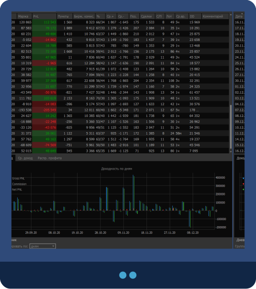

Инструменты журнала трейдера
Универсальные инструменты трейдера. Программа для учета анализа и сделок.
Торговля
Анализируйте свою торговлю по таблице,
в которой указаны основные торговые показатели:
- Прибыль
- Процент прибыли от депозита
- Биржевая комиссия
- Количество сделок и позиций
- Средние плюс и минус по позициям
- Среднее время нахождения в позиции
- Просадка
- Другой полезная информация
Торговля
Анализируйте торговлю по дням недели:

Визуально оценить и сравнить доходность по дням, средний доход и распределение профита по часам можно в соответствующих вкладках под таблицей “Дневник”.
Торговля
Наблюдайте за кривой доходности в режиме онлайн:

Теперь вы узнаете итоговую прибыль раньше, чем из отчетов брокера!
Торговля
Анализируйте торговлю ваших стратегий по графикам:
- Выбор вида графика по прибыли
- Объединение графиков по стратегиям или контрактам
- Отображение прибыльных, убыточных и активных стратегий
Торговля
Удобные фильтры
- Устанавливайте даты “Начало” и “Конец” для отображения статистики за интересующий вас промежуток времени
- Выбирайте валюту, в которой будет отображаться статистика
- Объединяйте статистику по счетам, контрактам и стратегиям
- Оставляйте в фильтрах только интересующие вас счета, контракты, стратегии, для этого нужно поставитьили снять галочку слева.
- Быстро проставить все галочки обратно – один клик по кнопке “Выбрать все”
Торговля
Импорт сделок в журнал
- Вручную. Укажите необходимые поля в открывшемся окне и кликните “Добавить”
- Из отчета брокера. Укажите путь до отчета брокера и название брокера.
- Из терминалов. Выбирайте терминал, в которым вы торгуете, укажите путь до него, и получайте сделки из терминала в режиме онлайн.
Торговля
Изменения таблицы сделок
Редактируйте, удаляйте или исключайте из расчетов нужные сделки.
Не упустите возможность узнать, что тысячи трейдеров по всему миру используют для повышения эффективности своей торговли.
Надоело терпеть убытки? Хотите начать стабильно зарабатывать на финансовых
рынках?
Знаете, на чем вы теряете больше всего денег? У нас для вас есть пробная версия программы,
а так же можете ознакомится с тарифами и планами.